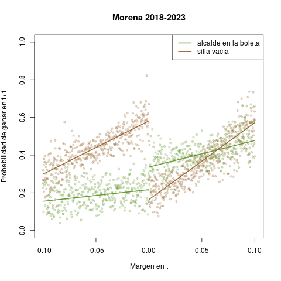
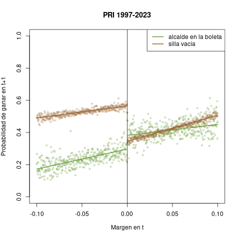

4. Hallazgos post-reforma
Las elecciones municipales marginales ($±$10%) del periodo 1997–2023 son reveladoras.4 Las líneas color marrón en los diagramas corresponden a sillas vacías (esto es, ocup\(_t =\) 0), las color verde a elecciones con ocupante para reelección (ocup\(_t =\) 1). La columna izquierda reporta el periodo completo, la derecha 2018-2023.
 |
 |
 |
|
|  |  |
Como en Lucardi y Rosas, la maldición aparece en el marrón del PAN, del PRI y de la izquierda. La `izquerda' en el análisis la conforman el PRD hasta 2012, Morena desde 2018, y ambos en 2015. Consciente de que esto oculta su conflicto abierto en el interim, estimé también un modelo para Morena exclusivamente desde 2018 (en la columna deracha, arriba). Destaca la amplitud de su brecha de ordenadas al origen marrón, de alrededor de 40 en vez de 20 puntos, así como las pendientes más pronunciadas. La erosión del partido presidencial en elecciones intermedias, en especial después de una elección crítica como fue 2018, dejó especialmente vulnerables los triunfos de Morena en municipios que AMLO arrastró a una victoria muy marginal. Un margen de +1 punto porcentual en vez de +5 redujo la probabilidad de reelección del Morena de 0.4 a 0.2; un margen de –1, en cambio, la elevó hasta 0.6.
Respecto de las líneas verdes, destacan tres patrones.
- Es notable como la brecha en ordenadas al origen, o sea la maldición del partido ocupante, se invierte. En términos estadísticos, más bien se diluye: si estimaramos una sola línea de regresión verde para los márgenes negativo y positivo, daría resultados casi idénticos a los reportados.5
- En el cuadrante derecho de los diagramas se distingue, a pesar del ruido en la nube de puntos verdes, que la ambición estática duplica la probabilidad de que el PAN y la izquierda ganen en $t+$1, y la mejora sustancialmente para Morena con márgendes debajo de .05. En cambio para el PRI, que pasada la reforma perdió también su estatus de partido municipal dominante, las nubes se confunden.
- Los cuadrantes izquierdos son la contraparte de la estabilidad relativa que aporta la reelección consecutiva. A todo partido le resulta más difícil derrotar a un alcalde opositor en la boleta.